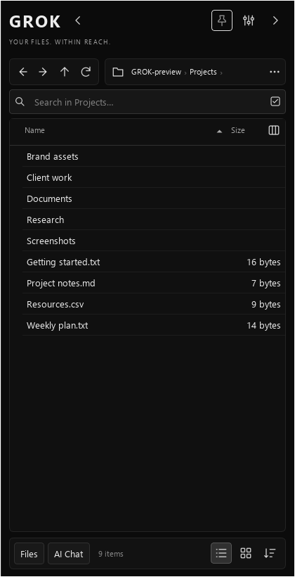

Click. Browse. Collapse.
A 42-pixel dock expands inward. Choose a narrow, medium or wide panel, or expand into a full-screen workspace with files and chat side by side.
A QUIET UTILITY FOR WINDOWS
Your files. Your AI. All in one sidebar.
Meet GROK — Graphical Resource Organization Kit. A tiny dock at your screen’s right edge. One click opens the files you need. One click gets out of your way.
Windows 10 / 11 · Local files · No account required

Actual application capture with demonstration files.
SMALL FOOTPRINT. EVERYDAY UTILITY.
A 42-pixel dock expands inward. Choose a narrow, medium or wide panel, or expand into a full-screen workspace with files and chat side by side.
Copy, cut, paste, move, rename and recycle. Navigate with paths and breadcrumbs, switch between list and grid, choose visible details, sort, save favorites and filter the current folder.
Drag files into GROK, out to compatible Windows apps, or onto a folder. Transfers run in the background with progress and cancellation.
Optional OpenAI, Gemini, xAI, Claude, DeepSeek, Groq, Mistral, OpenRouter and Together AI adapters use your API credentials and chosen model. Review text attachments before sending.
LOCAL FIRST, BY DESIGN
No GROK backend. No mandatory account. No analytics or telemetry. File management works offline.
When you choose external AI, messages go directly to that provider. You control what you send. Routing services such as OpenRouter forward requests to the chosen upstream provider.
Read the privacy policy ↗